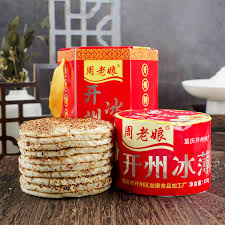
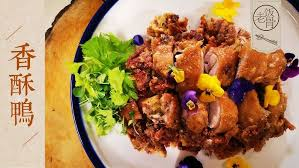
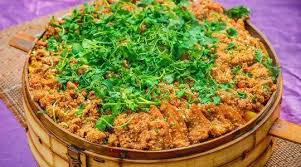
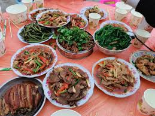
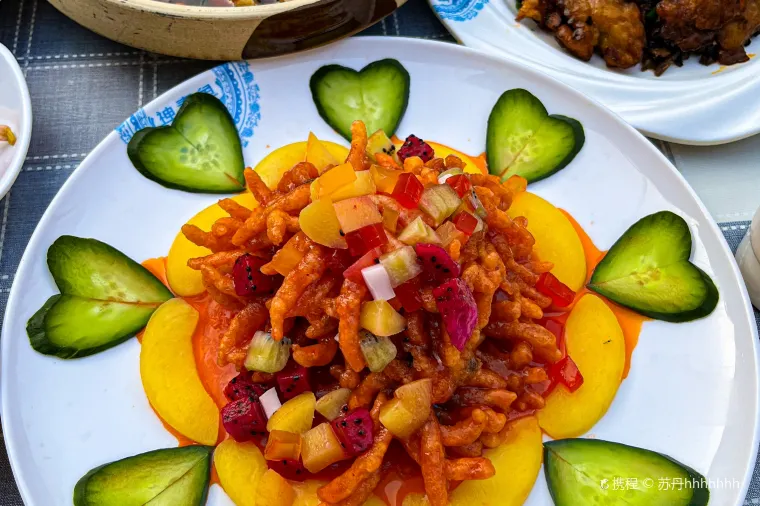

麻辣鲜香
开州菜融合川渝调味传统，擅用花椒与辣椒提香增鲜，讲究麻、辣、鲜、香层次分明，既能体现热烈口感，也注重回味的醇厚与平衡。
开州饮食文化植根于巴渝传统，既承袭川渝菜系重香重味的烹饪智慧，也在山地生活与江湖资源中形成了鲜明的地方个性。山川丘陵孕育了四季分明的农产体系，腊味、豆制品、蒸菜和时令蔬蔬构成了乡村餐桌的日常底色；汉丰湖及周边水域则带来丰富湖鲜，鱼宴烹法讲究鲜香并重、汤味醇厚。节庆时节，冰薄月饼等传统糕点承载礼俗记忆，常以“以食传情”的方式串联亲友往来。与此同时，开州春橙、农家腊味等地方特产不断进入文旅消费场景，让游客在一餐一味之间感受开州从田园到城镇、从家常到宴席的多层次风味脉络。
开州菜融合川渝调味传统，擅用花椒与辣椒提香增鲜，讲究麻、辣、鲜、香层次分明，既能体现热烈口感，也注重回味的醇厚与平衡。
依托汉丰湖等水域资源，鱼鲜食材供应充足，清蒸、红烧、酸汤等做法并存，突出肉质细嫩与汤底鲜美，是开州宴席中的高人气风味。
乡村饮食重视本地食材与家常技法，腊味、蒸菜、炖煮农家菜常见于四季餐桌，味型朴实而有厚度，呈现出浓郁的乡土生活气息。
节令食品在开州饮食中地位重要，冰薄月饼等传统糕点以皮薄馅细、甜润适中见长，既是节庆礼食，也是游客青睐的地方伴手礼。

饼皮轻薄、馅心细润，甜而不腻，兼具节令仪式感与日常分享属性，长期是开州辨识度最高的经典味道之一。
特色关键词：皮薄馅香、甜润细腻

经腌制、蒸制与炸制等工序塑造复合香气，外皮酥脆、内里鲜嫩，是宴席与聚会中兼具口碑和仪式感的热门菜品。
特色关键词：外酥里嫩、椒香浓郁

荤素同蒸、层层叠味，食材在蒸汽中互相渗透，兼具丰盛口感与团圆意涵，常见于婚庆、节庆与家族宴请场合。
特色关键词：层次丰富、蒸香入味

依托四季农产与山地生态，春蔬、夏豆、秋粮、冬腊轮番登场，烹饪朴实却滋味扎实，最能体现开州日常生活温度。
特色关键词：乡土风味、四季有味
果香清新、酸甜均衡，既可鲜食，也常被加工成果干与果饮，是游客采购地方特产、分享旅程味道的热门选择。
特色关键词：清甜多汁、果香明亮

围绕本地湖鲜开发多道组合菜，兼顾清蒸、红烧与汤锅等口味层次，强调“鲜”与“暖”，适合多人共享与节庆聚餐。
特色关键词：鲜嫩爽滑、汤味醇厚
推荐理由：地方辨识度高，口感细腻，便于携带与分享。
适合场景：伴手礼采购、节庆走亲访友。
推荐理由：食材新鲜、做法多样，能集中体验开州“湖鲜”特色。
适合场景：家庭聚餐、朋友同游聚会。
推荐理由：风味浓郁，最能体现当地四季农家饮食传统。
适合场景：乡村餐馆打卡、深度文化体验。
推荐理由：果味清爽、购买方便，适合全龄游客。
适合场景：特产选购、返程前补给。
建议游客以“游景+品味”方式规划开州行程：白天可先沿汉丰湖步道或观景平台游览，体验山水与城市交融的景观，再在湖畔餐厅安排湖鲜鱼宴；下午转入城区文化游，走访特色街区品尝香酥鸭与地方小吃；若行程充裕，可延伸至周边乡村参与采摘体验与农家餐，集中感受时令食材和乡土风味。返程前选购冰薄月饼、春橙等特产，可为旅程留下完整“味觉纪念”。